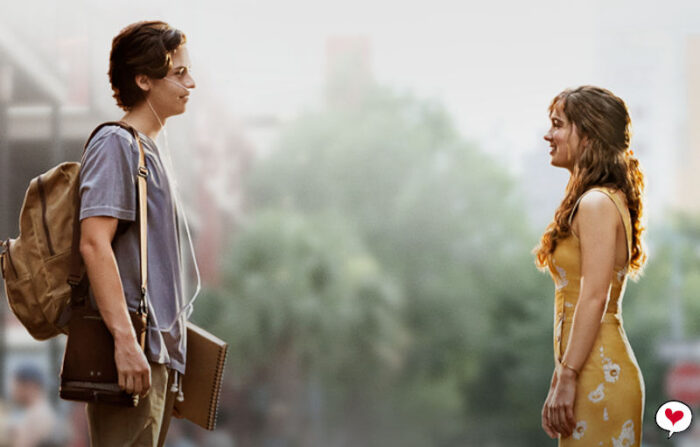

Stella é uma paciente com Fibrose Cística que faz videos para a internet, sobre sua rotina no hospital e assim vive sua vida. Ela tem um melhor amigo chamado Poe que tambem sofre da mesma doença.
Em um dia que ela estava passeando pelo hospital, ela ve Will em um quarto com seus amigos. Will estava no hospital pela tentativa de se livrar de uma nova bactéria.
Ela gosta de sempre seguir as regras , já ele não muito, o que faz com que no inicío Stella não goste muito de Will. Stella vê que Will não está seguindo com seu tratamento e decide começar a ajudar ele.
Com o tempo os dois começam as se aproximar e a gostar um do outro, o primeiro encontro ocorre na piscina do hospital, nesse encontro eles falam sobre as cirurgias que passsaram, eles quase se beijam e tambem quase são pegos pela médica do hospital. No outro dia, Stella e Poe fazem uma surpresa de aniversário para Will com sua familía e amigos.
Dias depois Poe acaba falecendo e Stella fica muito triste por nunca ter abraçado seu melhor amigo, e ve que é muito rigorosa com sua própria vida. Então convence Will a sair do hospital e passear para ver as luzes. De repente Will sente Stella tocando suas mãos, ele se espanta mas lembra que estão de luvas.
Eles se divertem e se deitam sobre um lago congelado. O hospital recebe a proposta de um possivel transplante para Stella, mas ela ignora as ligações para passar mais tempo com Will.
Will descobre sobre o transplante e pede para que Stella faça mas ela se nega. Stella acaba caindo na agua quando estava tentando atravessar o gelo. Will consegue puxá-la, mas Stella não está mais acordada. Ele faz ressussitação cardiopulmonar mesmo com perigo de infecção e Stella acorda. Então são levados para o hospital, e ela concorda em fazer o transplante por Will. A cirurgia vai bem, mas ela acaba contraindo a bactéria do Will.
Quando Stella sai da cirurgia vê Will pelo vidro, que decorou o quarto dela com varias luzes, por não conseguirem ver naquela noite. Ele fala que os remédios não estão funcionando e que ele não quer que ela veja ele morrendo. Will confessa estar apaixonado e faz com que Stella feche os olhos, e ele vai embora.
